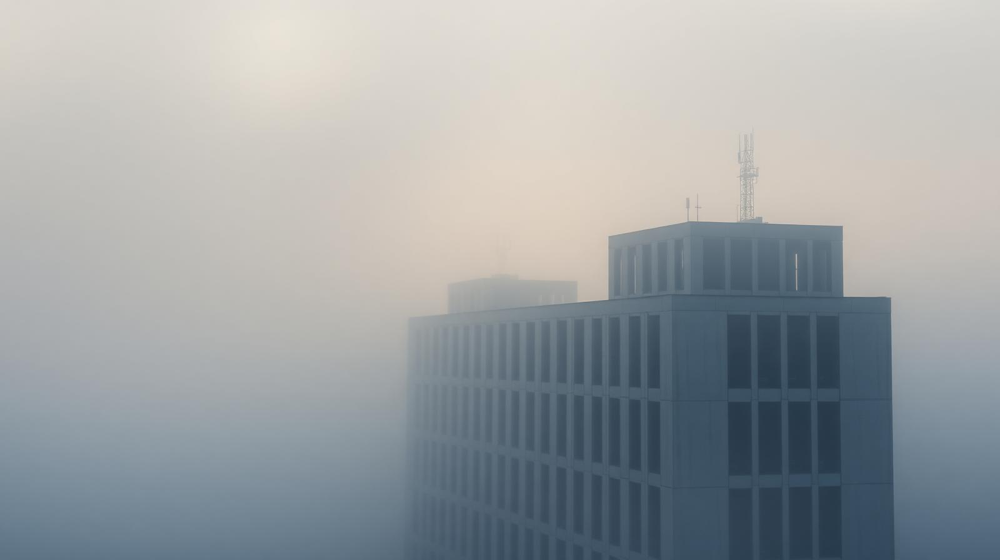
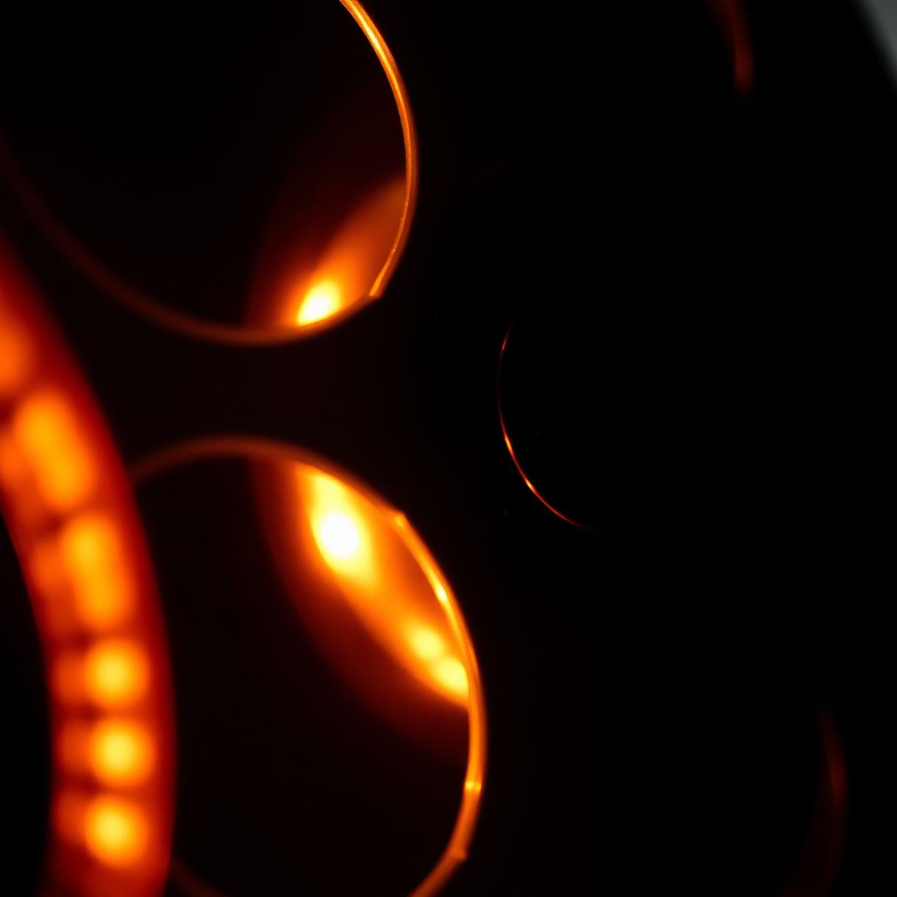
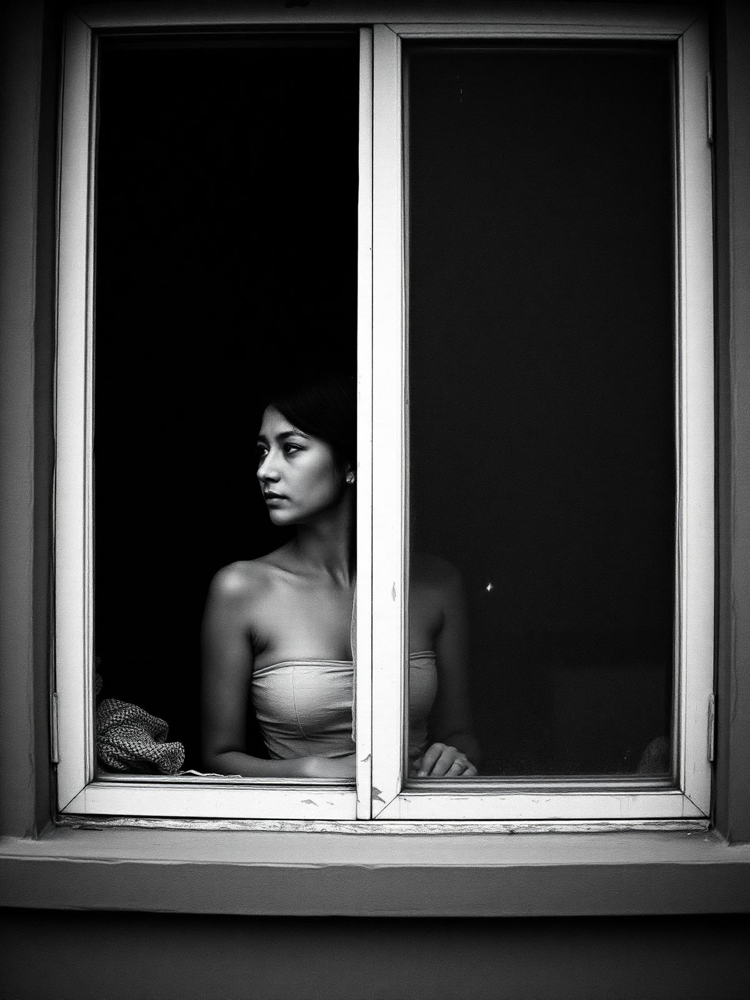

Sur cette page sont mis en avant mes projets et mes réalisations. Ces éléments ont pour but de montrer mes capacités et mes compétences dans le cadre de la production visuelle et artistique. Chaque élément mis ici reflète, de près ou de loin, ma manière de voir le monde. Vous pouvez cliquer sur les éléments pour les agrandir et/ou avoir plus d'informations.
Souvenirs
Captation urbaine
Cinematic
Cinematic
Test Étalonnage



Une galerie en attente de ses images — fragments, instants, lumières.